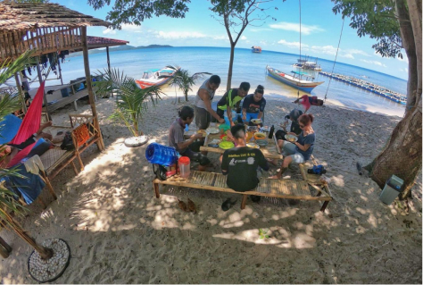
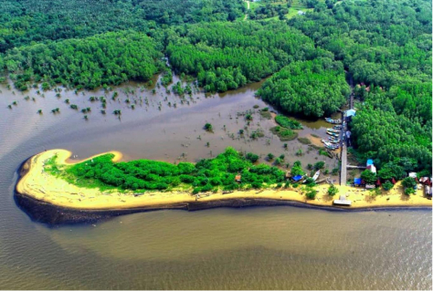

Cempedak Jaya Tourism Village
Wisata Cempedak Jaya Village in Kendawangan Kiri Village, Kendawangan District, Ketapang Regency - West Kalimantan is a community-based marine conservation tourism village.

Celincing Tourism Suka Baru Village
Celincing Beach is located in Sukabaru Village, Benua Kayong District, Ketapang Regency, West Kalimantan Province. It is currently managed by the Tourism Awareness Group (Pokdarwis).

Sawi Island
This tourist spot in West Kalimantan is truly amazing. The beach sand is so beautiful and the marine life is quite diverse. Playing on the beach and snorkeling are activities that you must do when you are on Sawi Island.

Mekar Utama Tourism Village
Mekar Utama Tourism Village in Kendawangan District, Ketapang Regency West Kalimantan has quite complete potential ranging from marine tourism to natural mountain tourism With the charm of marine tourism.
Tengar River
Being one of the tourist destinations that is quite mandatory when you visit Ketapang Regency, the Tengar River. You can go down the Tengar River by using a fishing boat while enjoying the beauty of the riverbank.
Pantai Sisik
Pasir Sisik Kendawangan Beach is located in Ketapang Regency, Indonesia. Pantai Sisik must come to the island to get to Pasir Sisik Kendawangan Beach's rating is 4.3 stars out of 5 stars, based on 7 reviews.